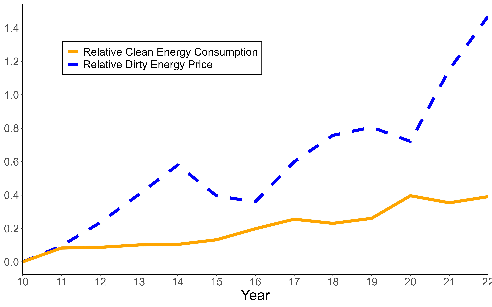

MANUSCRIPT
Abstract
We develop a methodology to estimate the aggregate elasticity of substitution between polluting and non-polluting energy. Exploiting variation in US states’ energy mixes, we estimate an elasticity of 0.59 — statistically closer to unity and significantly smaller than prior studies suggest. This implies that subsidies alone may be insufficient to achieve a long-run energy transition. A model linking aggregate and sectoral elasticities implies a technological elasticity of 0.72, with the transportation sector emerging as a key constraint on overall substitutability. We show that increases in clean energy shares do not significantly raise the aggregate elasticity unless sectoral elasticities rise.
Figure 5: Clean Energy Consumption vs Dirty Energy Prices.

Notes: The figure plots two series for the US: the log-difference in average energy prices between pollutant and non-pollutant sources, and the log-difference in energy consumption between clean and dirty energy. Both series are normalized to 100 in 2010 prior to the log transformation. As a proxy for clean energy prices, we use onshore wind LCOE estimates from International Renewable Energy Agency (2024); analogous results using photovoltaic estimates are shown in figure 13. All prices are adjusted for inflation.